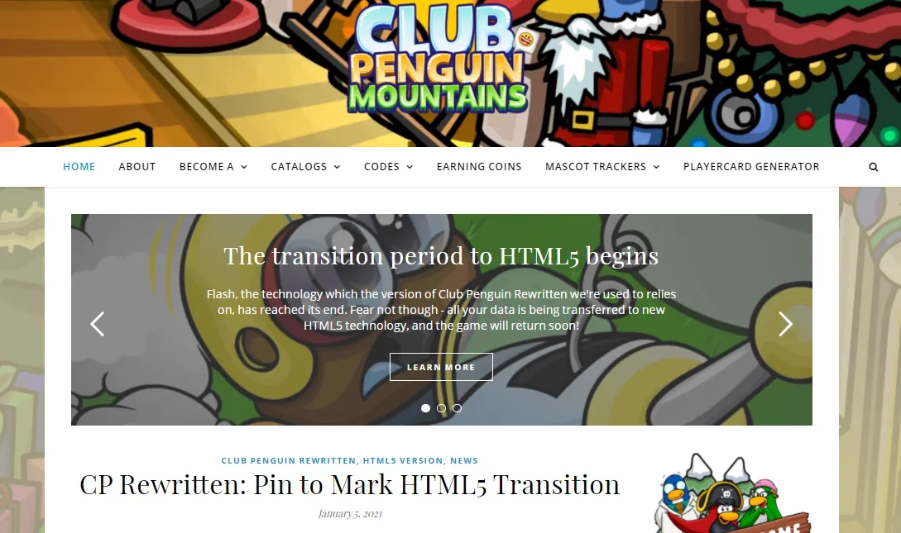
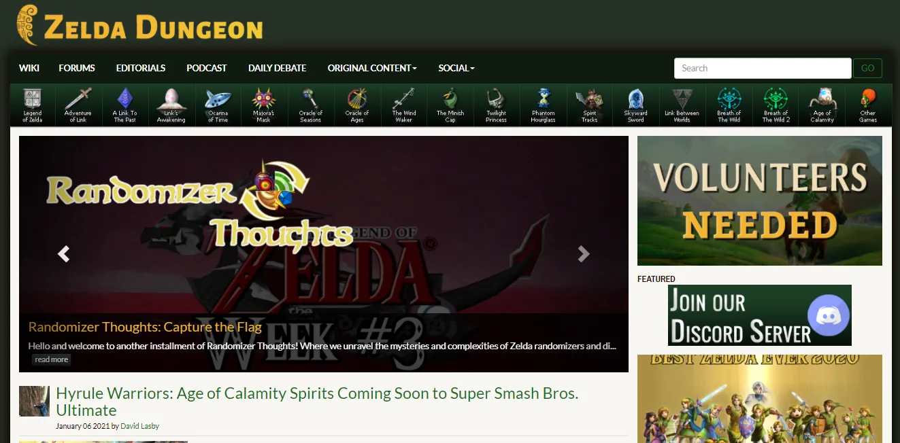

Do you read long articles? — A quick look into 3 gaming fansites worlds
In an industry with almost 3 billion gamers and counting, games have been conquering the hearts of writers and reading lovers. Updates, community engagement or article critiques encourage gamers to express themselves through words.
Did you know there’s a study stating that “72% of people get creative ideas while in the shower”? One of these days after a periodical evaluation at work I was saying how I’d like to learn more about content strategies and how it’s exciting to find gaps on how to encourage players to for instance, read a text about gaming updates. After, I went for a shower and got myself thinking on how players from a specific gaming community I used to belong to, got used to reading full articles with over a thousand words in 2020 when the average of an article written three years before was much less, with few exceptions.
Digging into Google, questions as “Are gamers readers?” or “Do gamers read?” appear in forums with interesting answers but not supporting my argument. Nevertheless, science fiction and fantasy seem to be the most popular genres mentioned. I don’t think it’s possible to get a generalized answer unless doing a specific research on the matter with a large sample of gamers. It’s worth notice as well that the “being a gamer” stereotype has been dissolving itself, allowing the existence of a non “I play games” and “I like to read” intersection and that people have their own individual tastes.
My experience with gaming fansites started in 2017 when I searched for ways to improve my writing skills within the Habbo Hotel community. I got mentored by two friends who already had years of writing experience in fansites at first, and got different teachers along the way. You’d be surprised by the amount of rules and guidelines fansites’ dashboards have put together to help and train upcoming journalists. You’d also be surprised by the lack of female writers.
But it didn’t take long to spot the lack of different content, and meet the finest names of investigative journalism who were doing things differently. When I had the opportunity to publish, my personal strategy was to revive old research, backing it up with interviews or comments from players and specialists, and try to present a critical perspective. I ended up writing articles with an estimated reading time of 5 to 10 minutes which were easily shared and (thankfully) read. You can check one here and another here. Fast forwarding 3 years, emerging writers have been paving the way for more detailed and creative lengthy articles, which are now considered the norm.
But, what happened during this time? Had players started to love the game so much at the point they wanted to read more about it? Was there a learning process of reading longer texts? Or a change in the reading behavior?
According to The Atlantic, which cites a study from Pew Research Center, “long-form journalism does have a place in today’s mobile-centric society” and “Small screens don’t deter readers — even from longer articles”. Interestingly, the majority of the fansites offers a well-designed mobile version, attractive to users and promoting longer texts. Contrastively according to Nielsen Norman Group, an American user experience consulting firm, the long vs short article isn’t a one way route. It depends on your communication goals and “a mixed diet that combines brief overviews and comprehensive coverage is often best”.

At this point, finding out answers to these questions wouldn’t be so simple as it could have sounded in the beginning. After all, being all games different, it means each one has their own ecosystem and engaging behavior. My initial idea was to compare an already known community to completely different games such as League of Legends and Roblox. By getting in touch with a couple of players from these games, I got immediate feedback.
League of Legends is radically different — a fantasy adventure, action, MMO and RPG game -, presenting distinct approaches to its structure, so fansites work in different ways. They offer updates, sketches, etc, but Riot Games themselves already do that job by producing and publishing content for its community across their social channels. Adding up, according to a staff member from the Brazilian fansite LegendsBR, “We used to write articles. The strategy ones are not that popular but still offer a great value in the long-term. The gossip ones are viral and the news ones are instantaneous too but don’t work as well outside of social media”. Neopets was also not an option, still Neopets Hive looks to have been a cool place.
In the need of remaking my choices (which to tell you the truth, surprised me in the end), I ended up finding another two well-known worldwide communities, which had hardcore fanbases and long articles.
Habbo Hotel
Once one of the biggest social networking gaming platforms bringing together millions of users from all over the world since 2001, this nostalgic pixel game born even before Facebook counts with almost (active and inactive) 200 fansites in more than 10 languages. The ones still active, create some of the most engaging content you can read. I went back to get some answers.
From x@=camile=@x, the first female Investigative Journalist and previous Administrator of the huge (now inactive) HabboColor fansite.
-Your articles were exceptions besides their length. People wanted to read more every time. Why was that?, I asked her.
Most of the times, the shortest news would be the most read. We need to understand that Journalism inside Habbo Hotel passed through different stages. People always try to minimize the most amount of text possible, like Puhekupla which makes use of images and short sentences to create viral call of actions. But my articles were longer because they would serve a different purpose: reporting and investigation, and most of the readers were the ones who would be interested in knowing polemics or understanding social issues.
Nowadays, fansites use social media like Twitter to quickly make their news viral. Fansites like Fuusio, Puhekupla or PixelsEmotion are able to communicate with users without them having to navigate to their websites, and as Twitter has limited characters, both fansites and users got used to simpler and fastest ways to express their ideas, and only the essential is read. However, the special reports are still exceptions, and fansites like HabboNews are capable of awakening their followers’ interest into reading the full text and making them open the website link.”
From Leo, aka LeoToddy, aspiring student within the Data world, a great data analyst having helped fansites getting data through API’s, and International Reporter within this social game.
-Players have become more interested in numbers and game data. Can this be a factor to awaken curiosity and encourage reading?
I believe players are willing to read more, especially data-rich and very well-written articles, in such a way that I am able to trust what I read. Still, this also requires some strategy in the text presented so that the reader doesn’t get tired of reading or gives up on reading the article just because it’s long.”
Club Penguin
Who doesn’t remember Club Penguin? The massive multiplayer online game filled with games, activities and of course, penguins, opened in 2005 and closed its doors 12 years after, breaking the hearts of the most loyal players. According to its Fandom wiki, more than 300 million penguins were alive in more than 190 countries and similarly to many other social chatting games, there were concerns about children’s online safety.
Club Penguin Mountains is an incredible fansite for Club Penguin Rewritten, “a free virtual world based on Disney’s Club Penguin” which has tons of articles related to the game as it puts players up-to-date with the gaming world as well as gaming updates which can impact user experience like the end of Flash. And guess what, offers long articles. The website makes it easy to navigate and find the information you need. It opened in 2013 and has more than 12 million visits.
So I needed to get some insight into it. I was lucky to speak with Torres, also known as penguin Torres126, who promptly provided in-depth information in such a clear way I thought to just transcribe it down below:
The tradition for blogs in the Club Penguin community is to provide “news” and guides about in-game updates, typically through collecting information from around the Internet (such as on social media or in-game messages by staff) and presenting it in a single place for viewers to read. These sorts of news blogs date back well over a decade, as there’s always been a sustained interest about “what’s next” for the game. The length of these articles tends to be quite short, but that’s adequate enough to convey the necessary information, and it’s compensated for with the frequency of news stories which can appear.
It’s also true that on many Club Penguin blogs, you’ll find lengthier articles that explore a topic more heavily. Back when classic Club Penguin was around (2005–2017), lengthier articles particularly tended to convey a desire for something to change, especially since blogs were a way of attracting the attention of higher-ups at the game. There’s a couple of examples which come to mind — for example, this one notably attracted a response from Club Penguin’s General Manager.
The other form of lengthier articles, which remains common today, are interviews — I’ve found that a lot of people are always fascinated by the “behind-the-scenes” aspect of games which they care about, and I agree with you that it’s a reflection of the attachment between players and the franchise. It’s difficult to convey much depth within a couple of paragraphs, and so people will be willing to dedicate the time in reading these articles irrespective of length. For example, this one attracted much interest.”
I couldn’t avoid being particularly drawn to the passion put both in the last article and the featured TEDTalk. I’d recommend it for everyone who likes to meet new people, isn’t afraid to take risks, and loves games above all.
Zelda Universe and Zelda Dungeon
Let me start by saying (and you might judge me) but I only tried Zelda once. My roommate loves the game and the legendary actor Robin Williams even gave his daughter the name of Zelda, so this last but not least fansite had to be an awesome one. Zelda is a fantasy adventure and exploration game being the first game of The Legend of Zelda series released in 1986.
It conquered the admiration and love of generations of players, has beautiful designs, connects people from all over the world and has sold millions of copies. And, has an incredible amount of user-generated-content in all shapes and sizes.
As I’m an undecided person, I chose two. Zelda Universe and Zelda Dungeonboth opened in 2001, both provide literally tons of information about the game, both offer a forum function within their websites via Disqus and both encourage the writing of creative and dissected articles.
Additionally, both have built“a healthy relationship beneficial for the teams who work more closely”, saidJaimie Ditchfield from Zelda Universe with whom I had the luck to speak with. He is a Games Journalist and writing enthusiast who finds the Gaming industry fascinating. He has written for BackToTheGaming, Nowtendo and is currently contributing features to NintendoEnthusiast.
The difference between these sites is that Zelda Universe gets more engagement from a hardcore fan perspective while those other sites tend to focus more on the facts. NintendoEnthusiast is close to ZU in terms of that, with me offering my perspective on different topics.”
Having the answers surpassed my expectations, once again I decided to simply transcribe them.
I don’t believe that longer articles are enjoyed more per se, but they do offer a way for us to interact with our audience and impose questions. Our community is very much engaged with these pieces as seen with the columns such as Medli’s Melodies where we dissect Zelda music. Shorter articles are also effective as well, especially in regards to news. Most of my time at ZU has been focused on the News side of things, with me contributing features to other websites such as Nintendo Enthusiast. Shorter articles are digestible and I believe that they also engage fans, especially on social media. For instance when we reported on Hyrule Warriors: Age of Calamity, the responses were passionate and in turn produced online discussion. I also like it when we offer the spotlight to creators, often related to Zelda through fan projects and mods. So I believe that any length of article can offer different types of engagement. I do agree about the community wanting to dive deeper though, but the length tends to be unimportant sometimes. It all depends on the context.”
On different people with views and experiences,
“The best part about ZU I’d say would be the variety of people. In the staff team, we have people from all over the globe including myself from the UK with others being located in Australia, the Netherlands and USA. Each of us has our own story to tell I’d say, the forums are evidence enough for when we introduce ourselves. We have people of different ages too, with me being probably one of the youngest at the age of 21 (nearly 22). It allows us to be diverse in our content. In regards to its importance, I believe that it teaches people about different perspectives and allows us to feel more like a community.”
And are gamers producing more content?
“I’d say so yes. They’re wanting to share their love of the medium, as seen with the popularity of eSports. I think that gaming companies enjoy this, Zelda Universe works with Nintendo on occasions. (Just recently we got sent early review codes of Hyrule Warriors: Age of Calamity). Being closely affiliated with Nintendo is a positive for both parties, as it provides them with free marketing and engages other Zelda fans as well. In regards to us stealing the show, I’d say no not really because we’re creating a conversation and in turn expressing our adoration for video-games.”
Not forgetting about interviews, which are quite long articles,
“Interview pieces are a strange one. They can either be successful or a complete failure depending on the angle. Luckily the video-game industry is a lot more interesting than the likes of film and TV journalism because there are more stories to tell. Our video producer, Alex Trevino released an interview with Patricia Summerset (Zelda’s Voice Actress) and that got a lot of views on YouTube. That kind of thing is always interesting because we get an insight into voice acting and the process of getting into it.”
And last but definitely not least, Emily Curtis from Zelda Dungeon who besides a great writer is also a freelance artist and programmer, quickly put herself available to help complementing this article by explaining how important it is to pay attention to mixed content and its communication goals.
“With Zelda Dungeon, we actually try to cater particularly to both ends of that spectrum. We have a decent number of long form editorial and serials we publish, for example my personal series, Randomizer Thoughts which are lengthy bi-weekly pieces on the nuances of the Randomizer genre of Rom hacks, but we also have very short and direct news pieces and our Daily Debate article which usually only cap out at 3–4 paragraphs.
It’s our intent that we can capture very casual fans with the smaller pieces and let them get their engagement with very little commitment, while our longer editorials are intended for those you mentioned who want lengthier, more intensive pieces that really dissect the deeper elements of the Zelda series. Primarily, we focus on deep integrity in our writing, and that’s primarily what I believe drives our strong viewership. We are encouraged to thoroughly research our work, reach out to those involved for direct source statements, and pursue our own passions within the Zelda community, and that shows in our writing quite often. I recall recently I wrote a news piece on Miis and while it was a news story covered by many video game media outlets, my article was one of the few that mentioned the primary individual’s actual project that led to this news coming up in the first place.
We take a lot of pride in the quality of what we write about and will reject and delay articles if they don’t meet those levels of integrity we set for ourselves and I think that goes into why we are beloved as a news base and editorial service.”
As a female writer, I asked her if she felt there was any gap regarding genders.
“This is a bit of a tricky spot. I absolutely believe there should be a strong number of female writers on a staff, but it should be something that happens naturally and is not forced. We have a fairly strong community of female writers on our staff at Zelda Dungeon, many of which are actually on our management staff. There are definitely more men than women I’m quite certain, but there are many fan news sites I’ve seen with only one or no females at all on staff.
I think in many ways it is important to have a large variety of demographics given that video games are inherently a form of culture that we view through the lens of our own cultures and we inherently can’t capture all those perspectives when those cultures aren’t represented in our writing staff. Speaking as a woman, I have an inherently different perspective on who say, Link is compared to my male friends. While many of them can claim Link represents them, there’s a disconnect for me in some versions of him and this is common among other women.
These viewpoints make interesting insights that male viewers may not even stop to consider and it’s through this meshing of cultures that we can share that and this is inherently why I find it important to have those present.”
While doing this research, I also came across the argument “fansites are dead” since almost every gamer uses some kind of social media channel to stay in touch with its friends, and the rise of aggregated websites like forums provide an easy access to helpful and quick information about any kind of game.
Nevertheless, fansites are ideas put into the digital world by gamers for gamers, encouraging the development of skills and shaping a continuous desire for innovation. From radios, to podcasts, art and let’s not forget writing, maybe length isn’t the most important factor for a healthy reading. I hope not.
I feel to have barely scratched the surface on this one but still one of the most exciting articles I’ve ever wanted to write. Special thanks to everyone who helped and gave a piece of their time, Leo, Camile, Torres, Jaimie and Emily.
Disclaimer: All collected statements belong to each interviewed and don’t necessarily reflect the official stance of the respective fansites.
Thanks for reading this far.